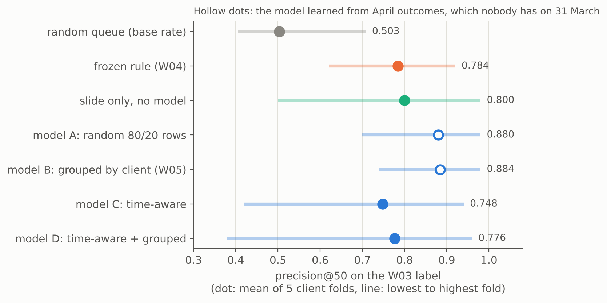
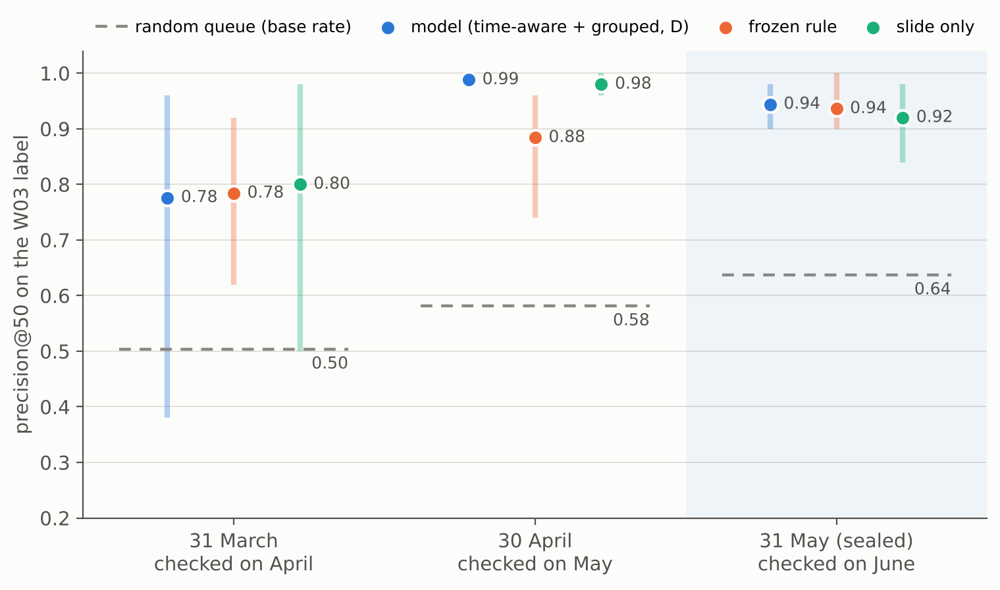
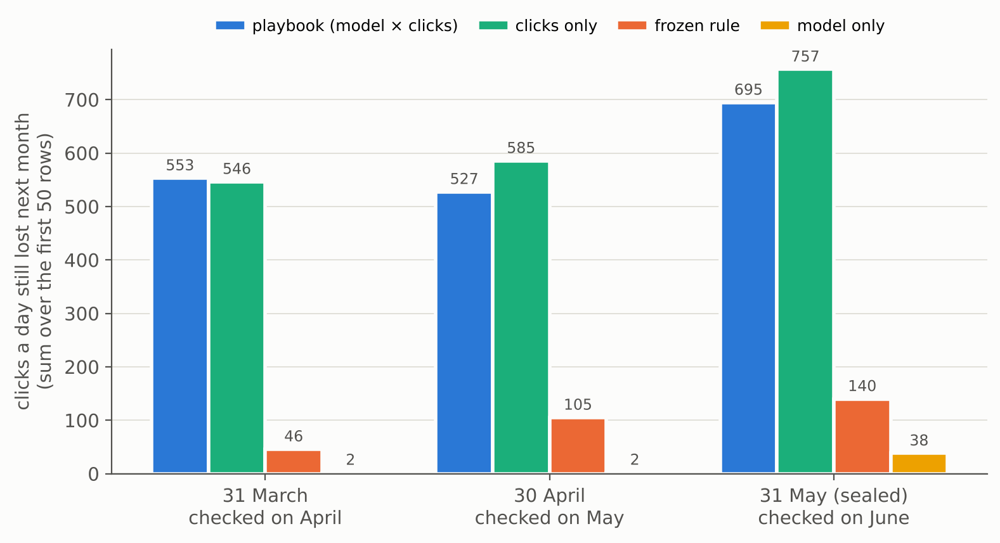
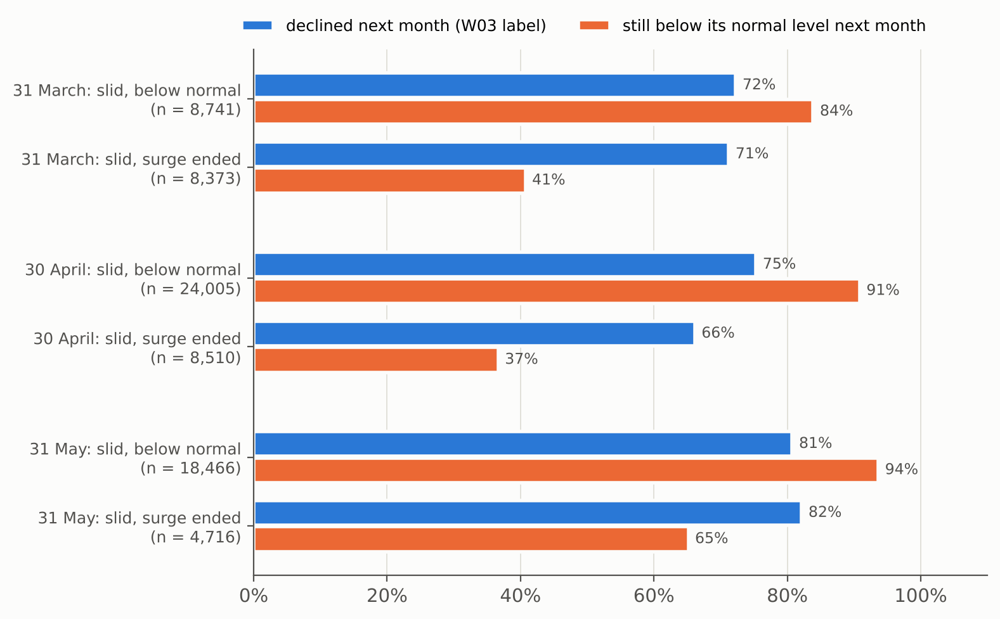

Abstract
A content reviewer at FlyRank has time for about 50 pages a month, so this paper asks which pages they should look at first. I used FlyRank's pseudonymized warehouse release of Google Search Console data (78.8 million daily rows) and built one row per page per month for 94,496 to 106,609 pages from 38 to 45 client sites, with decision days at the end of March, April and May 2026. A frozen hand rule, a logistic regression and a plain sort by the drop inside the month were compared on held-out clients with training only on the past and an action playbook ordered the pages that need a person by the clicks they lost against their own previous month. On the sealed month (decided on 31 May, read once after eight expected results were fixed in code) all eight held: the model's precision@50 was 0.944 against 0.936 for the rule, 0.920 for the drop sort and a base rate of 0.637; the playbook's first 50 rows held 695 clicks a day that were still lost a month later, against 38 for the model alone. The queue is decision support for finding visits that were already lost and stayed lost: it does not forecast new drops, it does not show that a refresh would bring traffic back and the model is level with the simple methods rather than ahead of them.
1Introduction and problem statement
On the last day of May a reviewer opens a list of about 100,000 pages from 45 client sites. They can check about 50. Some pages lost visits and will stay down. Some only look down because a spike early in the month ended. Some are new pages that dipped for a week and will come back. A batch of 50 is about 17 hours of review, so picking the wrong 50 spends that time on pages that did not need it while the real losses wait another month.
So the decision this work supports is narrow: which pages a person reviews first each month and which check to start with. The output is a ranked queue with an action and a reason for every page. A person makes every decision. Nothing is changed on a site automatically.
The obvious answers did not hold up in this data:
- Biggest pages first does worse than random. Sorting by search volume put steady pages at the top: precision@50 of 0.28 against 0.515 for a random order (W04).
- A short surge ending looks exactly like a decline. A month-over-month label counts both the same, which pushes ended surges to the top of any queue trained on it (W04, W07).
- A model that looked 10 points better than a rule lost that lead once it was trained only on months that are complete on the decision day (W05 to W06).
This paper puts those lessons into one monthly queue and tests it honestly. The work has three parts:
- A comparison of a frozen rule, a slide-only sort and a logistic regression on the same pages, with clients held out and training only on the past.
- A playbook that gives each page one action and orders the pages that need a person by the visits they lost against their own normal level.
- A sealed test: the queue for 31 May was built without June, eight expected results were fixed in code and only then was June read, once.
What this paper does not do: it does not predict what Google will do, it does not forecast which pages will start to fall and it does not measure whether a refresh brings traffic back. Section 5 explains each of these limits.
2Data
Release. FlyRank's pseudonymized warehouse release on Hugging Face (FlyRank/internship-warehouse, build flyrank_pseudonymized_warehouse_release_v20260703, exported 3 July 2026). Its daily table has 78,835,655 rows, one per page per day, from 27 January 2025 to 30 June 2026. Client and page ids are scrambled codes. The release has no client names, domains, URLs, page titles or search queries.
What I used. The monthly partitions of fact_content_daily_performance for February to June 2026 (Google Search Console impressions, clicks, positions and a flag for days with search data) and one column of dim_clients (the date each client's search tracking started, so an early zero is never read as "no impressions" when it means "not tracked yet").
What I left out and why.
- Page edit dates in
dim_content: they are a July 2026 snapshot, so on 31 March they would show edits made later. - The 90-day query table: its fixed window overlaps the months I use as labels.
- Google Analytics columns: only 4.2% of March rows have them. The rest are zero-filled or empty.
- FlyRank's product flags and scores: not in the release on purpose, so the work only learns from observed signals.
Which pages count. A page enters a month's frame when it has a row on every day of the month, its client was tracked from day 1, it had at least 100 impressions that month and it has a row on every day of the next month (so its outcome can be measured). The review pool keeps the pages with at least 5 impressions a day in the second half of the month. Below that bar a page has mostly vanished already and needs a technical check, not a review.
| Slice | Features | Normal level | Checked on | Pages | Clients | Review pool | Pool base rate |
|---|---|---|---|---|---|---|---|
| Training for 31 March | February | none | March | 64,881 | 26 | 60,290 | 0.240 |
| Decision on 31 March | March | February | April | 94,496 | 38 | 84,592 | 0.497 |
| Decision on 30 April | April | March | May | 99,868 | 44 | 84,691 | 0.573 |
| Decision on 31 May (sealed) | May | April | June | 106,609 | 45 | 90,194 | 0.641 |
Two things about this table matter later. First, every frame covers less than half of the 104 clients in the release, because many clients started tracking late or have little search data. Second, the base rate climbs every month, so raw precision numbers from different months are not directly comparable. Section 4 always shows the base rate next to them.
Public safety. Ids are used only to group pages and to split clients between training and testing, never as model inputs. Clients appear by rank only. This page shows aggregates only.
3Methodology
3.1Assumptions
- One decision a month, made on the last day of the month with that month's search data. In real life the data arrives 2 to 3 days late, so a live run happens a few days after month end.
- A page's previous month is its normal level. One month is short (limitation 5).
- A reviewer has time for about 50 pages a month, so the top of the list matters most. About 20 minutes per page is my own estimate.
3.2Unit, label and metric
Unit: one page in one month, scored on the last day of the month.
Label (a proxy): declined_next_month is 1 when next month's impressions per day are more than 20% below this month's. It says a page lost visibility. It does not say that a refresh would bring it back. It also counts pages that already fell late in the month and just stayed down, so every result is checked on a strict label too: next month more than 20% below the second half of this month, which only counts a fall after the decision day.
Metric: precision@50 (the share of the first 50 pages that carry the label), always next to the base rate. For the playbook the main measure is clicks a day still lost next month in the first 50 rows: each page's clicks a day in its normal month minus its clicks a day next month. It measures visits that were lost and did not come back on their own. It is not what a review would win back.
3.3Features
| Feature | How it is built |
|---|---|
imp_per_day_log | log(1 + impressions per day) |
ctr_pct | 100 × clicks / impressions |
avg_position | impression-weighted position over days with search data |
late_half_share | second-half impressions / all impressions (the "slide" inside the month) |
gsc_days | days with search data, scaled to a 31-day month |
3.4Baselines and model
- Random queue. Its precision is the base rate.
- Frozen rule (
sliding_with_demand, built in W04 and never changed). A page fires when its daily impressions fell 20% or more from the first half of the month to the second half and it still had 5 or more a day in the second half. Inside the rule, the most impressions lost per day come first. - Slide-only sort. No model, just pages ordered by how much of the month's impressions came in the second half (lowest first).
- Model. A logistic regression on the five features with standard scaling and default settings, no tuning (W05). For each decision day it is trained only on last month's review pool, whose labels are complete on the decision day.
3.5Validation design
Every number is computed inside five client folds (GroupKFold on the client id): each fold tests a separate group of clients and precision is measured fold by fold. The model is also time-aware: it never learns from the month it is tested on. Design D also leaves the test clients out of training. W06 compared four designs on the same March→April test pages:
- A. random 80/20 rows (what a plain split reports)
- B. grouped by client, trained on the other clients' April outcomes (the W05 design)
- C. time-aware: trained on February→March, all clients (the model the playbook uses)
- D. time-aware and grouped: trained on February→March without the test clients (the strictest)
D is the honest number for the model. Results are the mean of the five folds with the lowest and highest fold shown.
3.6The playbook
The playbook (W07, frozen) gives every page one action. Gates are checked in a fixed order and every cut is reused from an earlier week, none was tuned:
| Gate | Action | Needs a person? |
|---|---|---|
| under 5 impressions a day in the second half | not_in_review_pool | no |
| no full previous month (a new or newly tracked page) | wait_and_recheck | no, scored again next month |
| the rule fired but the second half is still at 80% or more of the previous month (a surge that ended) | monitor_only | no, nobody edits it |
| the rule did not fire and no clicks were lost | no_action | no |
| one day holds 30% or more of the first half's impressions | verify_then_review | yes: tracking or campaign check first |
| the whole client's second half is under 80% of its previous month | site_check_first | yes: one ticket per client |
| the rule fired and the page sits under 80% of its normal level | review_for_refresh | yes |
| anything left: the rule did not fire but clicks were lost | investigate_quiet_risk | yes |
The order inside the queue is model score × clicks at stake, where clicks at stake are the clicks a day in the previous month minus the clicks a day in the second half of this month. The model gives the risk and the clicks give the size. The first 50 rows that need a person are the monthly batch. The model score is used only to order rows. It is not calibrated, so it is never read as a probability.
3.7Leakage checks
- A label-derived column on purpose (W03): the score jumped from 0.692 to 1.000, then the column was removed.
- Features whose window overlaps the label (W06): one week of the label month lifted precision@50 from 0.884 to 0.960, three months of impressions that include it gave 1.000. None of them is used.
- Each feature dropped and each feature alone (W06): the slide carries the model (without it precision@50 falls from 0.884 to 0.652) but no single feature is suspiciously perfect.
- The filter that looks at the label month (a row on every day of it) removed 0 pages in the March and April frames. For the sealed run it is applied only after the queue exists.
- Carry-over (W06): 43% of the W05 top-50 hits only counted because the page had already fallen in late March. This is why the strict label is reported everywhere.
3.8The sealed test
June 2026 was never read in W03 to W07. For this paper the capstone notebook first re-ran the whole pipeline on 31 March and 30 April and checked that it gave back every W06 and W07 number exactly. Then it built the 31 May queue from May, April and the April→May labels only. Then it fixed eight expected results as pass/fail tests in code, each one something that had held on both earlier days. Only after that did it read June, once, as hindsight. One more check was added after June was read: a comparison of June's daily totals with May's, to see whether the newest days of the export were incomplete (section 4.6).
4Results
4.1The honest split erased the model's lead


Show the numbers
| Method (March→April test) | Learns from April outcomes? | P@50 | Lowest fold | Highest fold |
|---|---|---|---|---|
| random queue (base rate) | no model | 0.503 | 0.405 | 0.708 |
| frozen rule (W04) | no model | 0.784 | 0.620 | 0.920 |
| slide only | no model | 0.800 | 0.500 | 0.980 |
| model A: random 80/20 rows | yes, even of the test clients | 0.880 | 0.700 | 0.980 |
| model B: grouped by client (W05) | yes, of other clients | 0.884 | 0.740 | 0.980 |
| model C: time-aware | no | 0.748 | 0.420 | 0.940 |
| model D: time-aware + grouped | no | 0.776 | 0.380 | 0.960 |
A random 80/20 row split (A) would have reported 0.880 and hidden the problem. Grouping by client was not the weak spot. Time was: the W05 model had learned from April outcomes, which nobody has on 31 March.
4.2Three decision days: the model is level with the simple methods


Show the numbers
| Precision@50 (lowest to highest fold) | 31 March | 30 April | 31 May (sealed) |
|---|---|---|---|
| random queue (base rate) | 0.503 | 0.581 | 0.637 |
| model (D) | 0.776 (0.38 to 0.96) | 0.988 (0.98 to 1.00) | 0.944 (0.90 to 0.98) |
| frozen rule | 0.784 (0.62 to 0.92) | 0.884 (0.74 to 0.96) | 0.936 (0.90 to 1.00) |
| slide only | 0.800 (0.50 to 0.98) | 0.980 (0.96 to 1.00) | 0.920 (0.84 to 0.98) |
| Method | 31 March | 30 April | 31 May (sealed) |
|---|---|---|---|
| model (D) | +0.273 | +0.407 | +0.307 |
| frozen rule | +0.281 | +0.303 | +0.299 |
| slide only | +0.297 | +0.399 | +0.283 |
On the sealed day the model's 0.944 is less than one page in 50 ahead of the rule's 0.936. Over the three days the model is ahead of the rule twice and of the slide sort twice, never by much. The order changes from month to month. The honest reading is that all three rank pages that already lost visibility far better than chance, but the model is not reliably better than the simple ones.
4.3The sealed test: all eight expectations held
These eight results were fixed as pass/fail tests in code before June was read. The first two columns were already known when they were written. The third is the test.
| # | Expectation (and its fixed test) | 31 Mar | 30 Apr | 31 May (sealed) |
|---|---|---|---|---|
| H1 | Every ranking beats a random queuerule, slide sort and model all at least 0.10 above the base rate | ✓ held | ✓ held | ✓ held |
| H2 | The model is not clearly better than the slide sortmodel minus slide sort below +0.05 | ✓ held | ✓ held | ✓ held |
| H3 | The model is at least level with the frozen rulemodel minus rule at least −0.05 | ✓ held | ✓ held | ✓ held |
| H4 | The playbook order finds far more lasting click lossfirst 50 rows: at least 10× the model-only order and 2× the rule | ✓ held | ✓ held | ✓ held |
| H5 | Most of the batch stays below its normal levelat least 70% of the first 50 rows still under 80% of their normal level next month | ✓ held | ✓ held | ✓ held |
| H6 | The previous month separates decay from an ended surge"still below normal": real drops at least 20 points above ended surges | ✓ held | ✓ held | ✓ held |
| H7 | The label does not separate them"declined": the two groups within 10 points of each other | ✓ held | ✓ held | ✓ held |
| H8 | The queue does not forecast new fallsmodel on the strict label within 0.10 of its base rate | ✓ held | ✓ held | ✓ held |
8 of 8 held on the sealed month. Two of them (H2 and H8) are expectations that the method is not better than something: the sealed month confirmed the limits as well as the strengths.
4.4Where the value of a batch comes from


Show the numbers
| First 50 rows | 31 March | 30 April | 31 May (sealed) |
|---|---|---|---|
| playbook: clicks a day still lost / still below normal | 553 / 88% | 527 / 98% | 695 / 94% |
| clicks only | 546 / 76% | 585 / 94% | 757 / 94% |
| frozen rule | 46 / 82% | 105 / 90% | 140 / 82% |
| model only (rows with no click this month) | 2 (52%) | 2 (66%) | 38 (30%) |
On 31 May the playbook's first 50 rows held 695 clicks a day that were still lost in June, against 38 for the model-only order and 140 for the frozen rule. Of its rows, 94% were still below their normal level a month later. The model alone fills its top 50 with small pages that are easy to label as "declined" but hold almost no visits.
One result did not go the playbook's way. A plain clicks-at-stake order with no model held more lost clicks on the sealed day (757 vs 695) with the same persistence (94%). Over the three days the clicks-only order found more lasting click loss twice and a little less once (546 vs 553 on 31 March). The model weight added persistence on 31 March (+12 points) and 30 April (+4) and nothing in June. So the clicks at stake carry the value of the batch. The model weight is a small extra that has not clearly earned its place.
The batch is also concentrated: on 31 May it was 50 of 38,055 rows that need a person (0.13%) but held 8.5% of all their clicks at stake.
4.5Decay or an ended surge? The label can't tell, the page's own history can


Show the numbers
| Kind of page | Pages | Declined (label) | Still below normal next month |
|---|---|---|---|
| 31 March: slid, below normal | 8,741 | 72% | 84% |
| 31 March: slid, surge ended | 8,373 | 71% | 41% |
| 30 April: slid, below normal | 24,005 | 75% | 91% |
| 30 April: slid, surge ended | 8,510 | 66% | 37% |
| 31 May: slid, below normal | 18,466 | 81% | 94% |
| 31 May: slid, surge ended | 4,716 | 82% | 65% |
This is the finding that shaped the playbook. Real drops below a page's normal level mostly do not fix themselves within a month, so they go to a person. Surges that ended look the same to the label, so they go to monitor_only and nobody edits them. On the sealed day the gap was smaller (28 points against 43 and 54) because in June far more pages of every kind ended below normal, including 47.7% of the steady pages (27.2% and 28.4% before). That fits the June note below.
4.6What the model leans on and where it goes wrong
- The slide carries it. The share of the month's impressions that came in the second half has the largest weight in the W05 model and dropping it costs the most precision (0.884 to 0.652). Click-through rate comes second. These two keep the same sign in every month and they are the two signals the W04 audit confirmed in two month pairs. Volume and position change sign between months (W06).
- False alarms are mostly young pages with a short dip that came back the next month (W05, W06). That is why young pages wait a month in the playbook.
- Misses are mostly pages that grew inside the month and fell the next one, often a spike ending. Nothing in the month shows that coming.
- On the strict label the model sits at the base rate on all three days: 0.496 vs 0.508, 0.480 vs 0.509 and 0.628 vs 0.642. It finds pages that already lost visibility. It does not see a new fall coming.
A note on June. June is the last month of the release. Across the whole partition it had about 15% fewer impressions a day than May and about 8% fewer page-days with search data, while clicks a day were higher than in May. The newest week of June was only a little lower than the rest of the month (0.806 vs 0.849 of the May level), so this does not look like missing days at the end of the export. It looks like a drop across the whole portfolio that I cannot explain from this data. It raises June's base rate, so part of every June "decline" is this broad shift. 3,293 of the 106,609 pages (3.1%) had no full June and were left out of the scoring. None of them was in the first batch.
5Limitations and honest framing
- Nothing here is causal. The queue points at visits that were lost and stayed lost. No refresh was run, so nothing shows that a refresh, a new title or any other change would bring them back.
- Three decision days, one of them clean. March and April were used to build the playbook, so only June is an untouched check. A rolling test over more months is the most useful missing experiment.
- The label is a proxy and partly restates the month. "Declined" compares next month with this month's average, so a page that fell late in the month and stayed down counts as a hit. On the strict label the model is at the base rate.
- June had a portfolio-wide drop that I can't explain from this data (section 4.6).
- One month is a short normal level. If the previous month was itself unusual, "below normal" is wrong for that page.
- Coverage. The frames hold 38 to 45 of the 104 clients. Pages under the volume floor, young pages and clients without a full previous month are not judged, so absence from the queue is not a sign of health.
- Concentration. Three clients hold 49.4% of the 31 May pages and one client holds 32% of its batch, so every number leans on a few sites.
- Survivorship. The frame keeps pages with a row on every day. Pages that vanished are not in it.
- The model score is not calibrated. Its mean on the 31 May pool was 0.486 while 64.1% of the pool declined. It is only used to order rows.
| Safe to say | Not supported |
|---|---|
| Measured on held-out clients and a sealed month, the playbook's first 50 rows held 527 to 695 clicks a day that were still lost a month later. | Reviewing or refreshing these pages will win those clicks back. |
| The model, the frozen rule and a slide sort all ranked pages that went on to carry the label far above the base rate. | The model predicts which pages will decline. |
| Pages that slid below their own normal level were observed to stay below it more often than pages whose surge ended. | Decay causes the drop, or pages decay because of their age. |
| The queue is decision support for choosing what to look at first. | The queue can decide what to change, or rank writers, teams or clients. |
6Ranked recommendations
What a content team should do each month, in this order:
- Rebuild the queue a few days after month end and take the first 50 rows that need a person. The batch is small on purpose: on 31 May it was 0.13% of the rows that need a person but held 8.5% of their clicks at stake (section 4.4).
- Start with the site checks. When a whole client is down 20% or more against last month, open one ticket per client before touching single pages. On 31 May, 22 of the 50 rows came from 4 such clients: 4 site checks, not 22 page reviews.
- Then the
review_for_refreshrows. The page slid inside the month and sits below its own normal level. Go through the review questions below, write down what is out of date or missing and only then plan a change. - Then the
investigate_quiet_riskrows. Clicks fell against last month without a slide. Check the title, the snippet and the results page first, because the impressions may have held while the clicks fell. - Check tracking and campaigns first for
verify_then_reviewrows, where one day holds 30% or more of the first half. - Leave
monitor_onlypages alone. Their slide was a surge ending and they are back at their normal level. - Wait on young pages until they have a full month of history. Short dips on new pages caused most false alarms.
- Keep the order simple. Order by the clicks a page lost against its own previous month. Keep the model weight only while the monthly check shows it adding something over the clicks-only order. Over three months it did not clearly do so.
- Never automate the change. No automatic rewrite, prune, redirect, noindex or bulk title edit from this queue. These are hard to undo and young pages often come back.
- Log every decision and test refreshes properly. Record accept or reject, why, what changed and the date. Then refresh part of a batch, leave comparable pages alone and compare them 30, 60 and 90 days later. That is the only way to learn what a refresh does.
Intended use, in the spirit of a model card [2]: a monthly list for a content reviewer or SEO lead who plans about 50 reviews across clients. A person makes every decision. It is not for forecasting new drops, promising a recovery, client reports or ranking writers, teams or clients.
The five review questions for every row: (1) is this a real drop below the page's normal level or one big day, on the daily chart? (2) did a season, a campaign or a site change cause it? (3) does the page still match what people search for? (4) is the client changing things right now (a migration, a redesign, new pages)? (5) did a sibling page gain what this one lost?
| Action | Pages | Share | In the first batch |
|---|---|---|---|
site_check_first | 14,596 | 13.7% | 22 |
review_for_refresh | 10,319 | 9.7% | 12 |
investigate_quiet_risk | 12,701 | 11.9% | 10 |
verify_then_review | 439 | 0.4% | 6 |
monitor_only | 4,853 | 4.6% | 0 |
no_action | 35,583 | 33.4% | 0 |
wait_and_recheck | 11,703 | 11.0% | 0 |
not_in_review_pool | 16,415 | 15.4% | 0 |
What a reviewer gets for one row, here the first row of the 31 May batch (client shown by rank only):
The frozen rule did not fire for this page because it did not slide inside May, so a rule-only queue would not have shown it. Its clicks against its own April are what put it first.
7Reproducibility
Everything is in the public repository. Each week is one notebook that writes a small receipt (a JSON file with no page or client ids). The capstone notebook reads those receipts, re-runs the pipeline, reproduces the W06 and W07 numbers exactly and writes every figure on this page.
| Notebook | What it does |
|---|---|
| W03 data contract | unit, windows, five features, three verification queries, the leak trap |
| W04 baseline and signal audit | the frozen rule, its queue and the signal verdicts |
| W05 model | logistic regression and gradient boosting against the rule, error analysis |
| W06 validation audit | designs A to D, a second month pair, the leakage audit, the strict label |
| W07 action playbook | gates, the order, the decay table, the value of a batch, monitoring |
| Capstone | this paper: the reproduction check, the sealed June test and every figure |
How to rerun it. Request access to the gated release on Hugging Face (approval is instant), then:
git clone https://github.com/nishankchandoliya/flyrank-ml-internship.git
cd flyrank-ml-internship
pip install -r requirements.txt jupyter ipywidgets
export HF_TOKEN=... # your Hugging Face READ token
cd work/notebooks
jupyter nbconvert --to notebook --execute --inplace capstone.ipynbThe capstone notebook needs the committed receipts in work/outputs/. The W03 to W07 notebooks regenerate them the same way. In Colab, save the token as a Secret named HF_TOKEN instead.
| Item | Here |
|---|---|
| Data: statistics, splits, exclusions | Section 2 and Table 1. Five client folds (GroupKFold on the client id) plus time-aware training. Exclusions listed with reasons. |
| Data: where to get it | FlyRank/internship-warehouse on Hugging Face (gated), build v20260703 |
| Model and assumptions | Sections 3.1 to 3.6. Logistic regression with standard scaling, max_iter=1000, all other settings default |
| Hyperparameters | None tuned. Every cut (20% slide, 5 impressions a day, 80% of normal, 30% one-day share, 100 impressions a month, batch of 50) was fixed in an earlier week |
| Runs and randomness | One run per decision day and method. No random step: ties are broken by page id, so a rerun gives the same tables. Seed 42 where a library asks for one |
| Measures | Precision@K inside each client fold, mean of five folds with the lowest and highest fold. Clicks a day still lost next month, defined in section 3.2 |
| Code and dependencies | requirements.txt. Run with Python 3.13.17, scikit-learn 1.9.1, pandas 3.0.5, numpy 2.5.3, duckdb 2.0.0, matplotlib 3.11.2 |
| Compute and runtime | A normal CPU, no GPU. The capstone notebook takes about two minutes, most of it reading five monthly partitions over the network |
8Acknowledgments and data credit
Built on the FlyRank ML Internship dataset (flyrank.ai). FlyRank pseudonymized the data and released it to interns through a gated Hugging Face dataset. The data stays in that release. This page shows no client names, page ids or search queries.
Thanks to the FlyRank mentors and the live sessions of the internship. The data contract, the leak traps, the time-aware audit and the playbook all started from their questions. FlyRank's March 2026 report The State of AI-Driven SEO in Numbers [3], which ships with the internship repository, was the starting point for the methodology questions in W06.
References
- Pineau, J. et al. (2021). Improving reproducibility in machine learning research (a report from the NeurIPS 2019 reproducibility program). Journal of Machine Learning Research 22. jmlr.org/papers/v22/20-303.html. Checklist: ReproducibilityChecklist.pdf
- Mitchell, M. et al. (2019). Model cards for model reporting. Proceedings of FAT* 2019. research.google
- FlyRank (2026). The State of AI-Driven SEO in Numbers, March 2026. Included in the repository as
docs/flyrank-seo-research-march-2026.pdf.